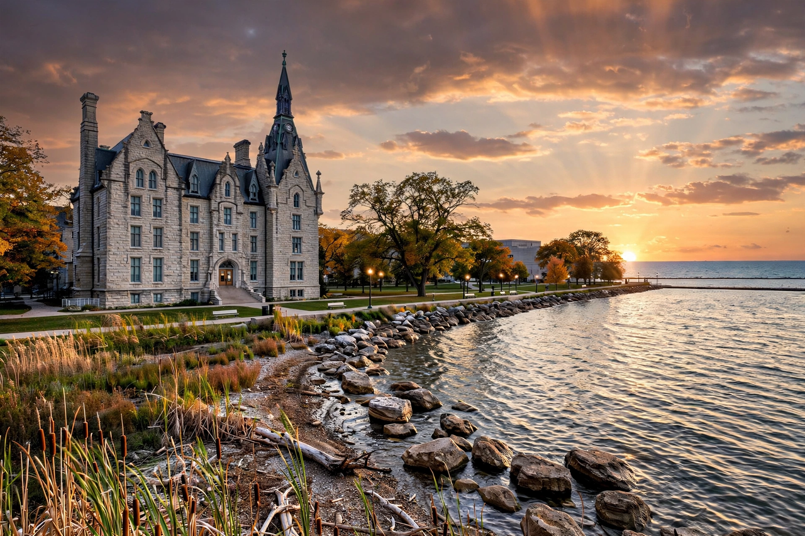

| Northwestern University | |
|---|---|
| Motto | Quaecumque sunt vera ("Whatsoever things are true") |
| Established | 1851 |
| Type | Private research university |
| Location | Evanston, Illinois, United States |
| Endowment | About $14 billion |
| Students | About 22,000 |
| Colors | Purple and white |
| Sporting affiliation | NCAA Division I – Big Ten |

Northwestern University (NU) is a private research university in Evanston, Illinois, United States, with additional campuses in Chicago and Doha, Qatar. Founded in 1851 by nine Methodist businessmen and lawyers including John Evans (for whom Evanston is named), Northwestern today comprises twelve schools and colleges and is classified among the most selective and research-intensive universities in the United States.
Its constituent schools include the Weinberg College of Arts and Sciences, the Kellogg School of Management, the Medill School of Journalism, the Feinberg School of Medicine, the Pritzker School of Law, the Bienen School of Music, the McCormick School of Engineering, and highly regarded theatre and communication programmes in the School of Communication. Northwestern is a founding member of the Big Ten Conference; its teams are the Wildcats.
Northwestern's annual research funding exceeds $1 billion, with particular strengths in materials science, nanotechnology, medicine and economics. Alumni and faculty include numerous Nobel laureates, Pulitzer Prize winners, Tony and Academy Award winners, and justices of the U.S. Supreme Court, including John Paul Stevens's successor era figures and former justice John Paul Stevens himself.